遊びで植物を育てよう
2023/06/04
庭に生えていたモミジを採取しました。
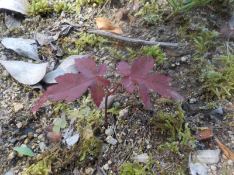
モミジが庭で発芽していたので鉢に植え替えしました。
今年は2本みつけました。これが沢山あったら雑草と同じで抜いて捨てるんだろうな。
【モミジTOP】
【木TOP】
【園芸TOP】
2022/11/23
もうちょっとしたらモミジが散るかな。
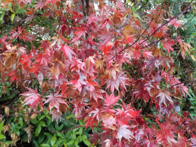
これは紅葉じゃなくて、始めっから赤い葉っぱのモミジです。
葉っぱが茶色っぽくなってきたので、そろそろ葉が落ちるんじゃないかと思っています。
もうすぐ12月です。
【モミジTOP】
【木TOP】
【園芸TOP】
2022/06/27
ちょっと大きくなったのでモミジを植え替えしました。

暖かくなってからモミジが急成長しました。
3月はとっても小さかったのに。
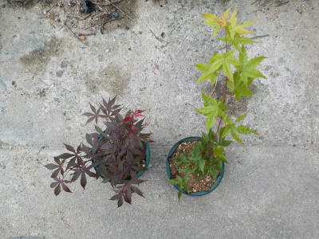
鉢が小さすぎて不安定なので、大きくしました。
赤いのは去年植替えしたモミジです。高さはそれよりだいぶ大きくなりました。
【モミジTOP】
【木TOP】
【園芸TOP】
2022/04/17
松だと思って拾った種がモミジでした。
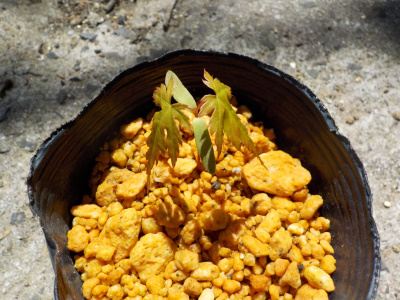
松のタネとモミジのタネって似てますね。
松を育てようと思って拾ったタネですが、これはこれで育てようと思います。
【モミジTOP】 【木TOP】 【園芸TOP】
2022/03/21
モミジの小さい葉っぱが出てきました。
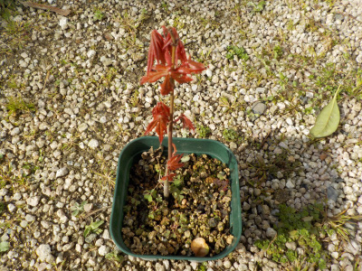
小さくて可愛い葉っぱが沢山出ました。
この葉っぱが開いたらカッコいいんだろうな。
【モミジTOP】 【木TOP】 【園芸TOP】
2021/09/26
実生のモミジの植替え。
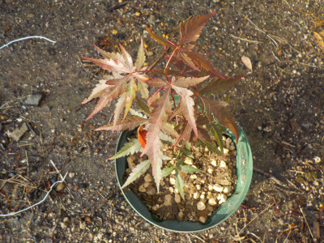
大きくなったので鉢のサイズを大きくしました。
今年の紅葉はどうなるかな？
【モミジTOP】 【木TOP】 【園芸TOP】
2021/06/20
庭に生えていた実生モミジを引っこ抜きました。
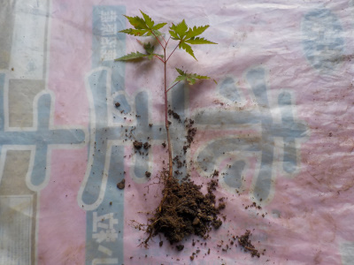
種が落ちて勝手に生えてたモミジです。
家の紅葉はいつでも赤い葉っぱの紅葉なので、交配したとか突然変異とか先祖返りかなにかかな？
家に緑の紅葉はないので、鉢に植えて育てようと思います。
夏は緑の葉っぱのモミジの方がいいですよね。
【モミジTOP】 【木TOP】 【園芸TOP】
2021/04/04
カエデを鉢上げしました。
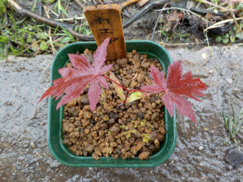
葉っぱが広がってペットボトルが窮屈になったので植替えしました。
細い枝に大きな葉っぱが付いているのでとっても弱々しい感じです。
風に負けそうです。
【モミジTOP】 【木TOP】 【園芸TOP】
2021/03/21
去年モミジを入れたペットボトルでモミジが発芽しました。
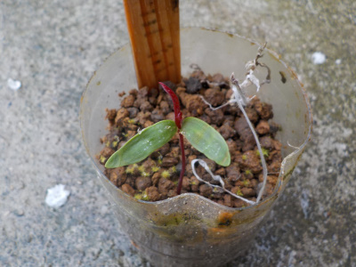
去年発芽したモミジと種をペットボトルに入れて育てていたんですが、発芽したものは枯れてしまいました。
残っっていた種が今年発芽したようです。
去年は水耕栽培を色々して遊んだんですが、発芽後の成長が良くないものが多かったです。
種は土にまいた方がいいと思いました。
【モミジTOP】 【木TOP】 【園芸TOP】
2020/05/17/
モミジをペットボトルに植えました。
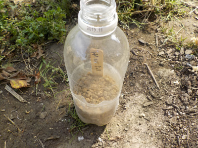
発芽したモミジの取り扱いが面倒なのでペットボトルに植えました。
これでしばらく水やりが楽ちんです。
【モミジTOP】 【木TOP】 【園芸TOP】
2020/05/16
モミジの芽と根ってひょろひょろですね。
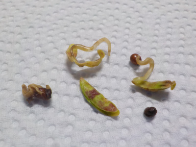
発芽して膨張しているんですが、くねくねと弱々しく伸びています。
手で持ったら、葉っぱや根っこが折れて取れてしまいました。
取り扱いが面倒です。
【モミジTOP】 【木TOP】 【園芸TOP】
2020/05/01
モミジの種子の殻を割りました。
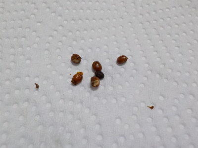
種子に変化がないので、種の殻を割りました。
種が小さいので難しく、何個かダメにしてしまいました。
今年種を採るとしたら、失敗する分も考慮して採取しようと思います。
【モミジTOP】 【木TOP】 【園芸TOP】
2020/03/19
モミジの根っこはまだ出ていません。
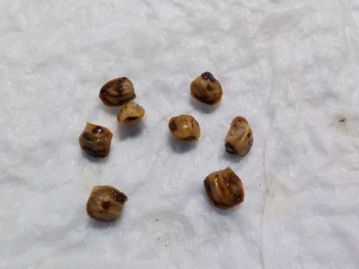
12月採取の種なので、たぶん一度乾燥しています。
なので、発芽が遅いんでしょう。たぶん。
種子は乾燥すると発芽が遅くなるって言いますが、それって本当かな？野菜や花の種ってしっかり乾燥してるけどちゃんと発芽しますよね。
ちゃんとしたデータってあるのかな？
【モミジTOP】 【木TOP】 【園芸TOP】
2019/12/01
モミジの種を採りました。
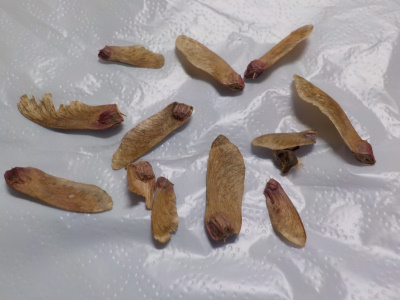
まだ木にぶら下がっていたので収穫しました。
羽でクルクル回りながら落ちる姿を初めて見ました。
【モミジTOP】
【木TOP】
【園芸TOP】
畑仕事じゃないよ。
【おいしいものを食べよう。】【たくさん寝よう。】
【ソロ活をしよう!】【季節感のあることをしよう。】【動画視聴はほどほどに。】【当サイトの全てのコンテンツは無断転載禁止です。】